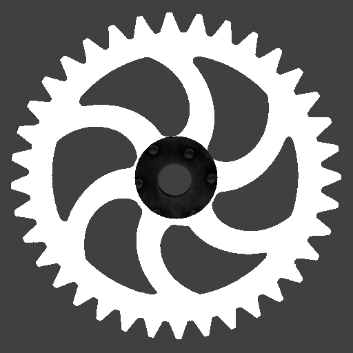
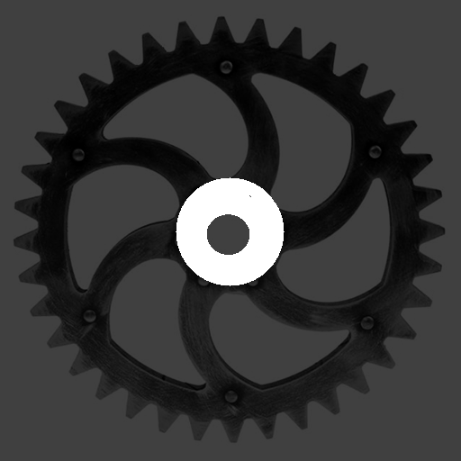

Set Operations
The three classical set operations — union, intersection, and difference — are the primary tools for combining regions. Because a region is a set of discrete pixel coordinates, these operations have exactly the meaning from mathematical set theory: each pixel either belongs or does not belong to a region, and the operations determine membership in the result accordingly.
All three operations handle complement regions transparently via De Morgan's laws. union(invert(a), invert(b)) returns invert(intersection(a, b)), and so on, so regular and complement regions can be freely mixed without special-casing.
Union
union(a, b) returns every pixel that belongs to at least one of the two regions — the pixel-wise logical OR. Pixels exclusive to a, pixels exclusive to b, and pixels in the overlap all appear in the result.
julia> a = region_from_box(0, 3, 4, 0); # 5 columns × 4 rows = 20 pixels
julia> b = region_from_box(3, 5, 7, 2); # 5 columns × 4 rows = 20 pixels, partly overlapping
julia> u = union(a, b);
julia> area(u) # 20 + 20 − 4 pixels of overlap
36
julia> contains(u, 1, 1) # inside a only
true
julia> contains(u, 6, 4) # inside b only
true
julia> contains(u, 4, 3) # inside both
trueunion is commutative (union(a,b) == union(b,a)) and associative, so combining more than two regions with union can be done in any order.
Typical uses: merging two separately segmented foreground regions, filling the gap between two adjacent blobs, or stitching together partial results from parallel segmentation passes.
Intersection
intersection(a, b) keeps only pixels that are present in both regions simultaneously — the pixel-wise logical AND. Pixels that belong exclusively to a or exclusively to b are dropped.
julia> i = intersection(a, b);
julia> area(i) # only the 2×2 overlap at columns 3–4, rows 2–3
4
julia> contains(i, 4, 3) # in both a and b
true
julia> contains(i, 1, 1) # in a only — excluded
falseA common pattern is masking: intersecting a segmented region with a geometrically defined region of interest (a circle, a box, a polygon) restricts analysis to a specific area without re-running segmentation.
julia> roi = region_from_circle(2, 2, 3); # circular region of interest
julia> masked = intersection(u, roi); # restrict the union result to the ROI
julia> area(masked) <= area(u)
trueDifference
difference(a, b) returns all pixels of a that are not in b. The operation is asymmetric: swapping the operands generally yields a different result.
julia> d = difference(a, b);
julia> area(d) # 20 − 4 overlapping pixels
16
julia> contains(d, 1, 1) # in a, not in b
true
julia> contains(d, 4, 3) # in both — excluded
false
julia> area(difference(b, a)) # subtract a from b instead
16Difference is used to punch holes in a region (subtract a reference shape or a known background area) or to isolate the part of one region not covered by another.
Combining Operations
The three operations compose freely. A common idiom is to build a complex shape from simple geometric primitives by alternating union and difference:
julia> disk = region_from_circle(0, 0, 10);
julia> hub = region_from_circle(0, 0, 3);
julia> notch = region_from_box(-1, 11, 1, 7); # rectangular notch at the top
julia> ring_with_notch = difference(difference(disk, hub), notch);
julia> area(ring_with_notch) < area(disk)
true
julia> !contains(ring_with_notch, 0, 0) # hub removed
true
julia> !contains(ring_with_notch, 0, 9) # notch removed
trueGear Example
Building on the segmentation from the previous section, set operations refine the gear region into analysis-ready sub-regions. A hub circle and an outer boundary circle are created geometrically and combined with the segmented gear via difference and intersection:
using FileIO, ImageIO, ImageMagick
img = load("gear.png")
gear = binarize(img, px -> px < 0.9)
# Approximate center and radii determined from the image dimensions (pixels)
cx, cy = 256, 256
hub_radius = 28
outer_radius = 240
# Remove the solid center hub — what remains are the gear teeth and body
hub = region_from_circle(cx, cy, hub_radius)
teeth_only = difference(gear, hub)
# Trim any noise or partial pixels outside the outer gear boundary
outline = region_from_circle(cx, cy, outer_radius)
teeth_trimmed = intersection(teeth_only, outline)
# Isolate the hub area separately for independent measurement
hub_region = intersection(gear, hub)The three resulting regions — teeth_trimmed, hub_region, and the full gear — can now be passed independently to area measurement, moment computation, or morphological analysis.
| Full gear | Teeth only | Hub only |
|---|---|---|
 |  |  |
Each image shows the segmented region in white against the darkened original photograph. The teeth image has the inner hub circle removed via difference; the hub image retains only the inner disc via intersection.